Construire des mosquées
Nous finançons des projets de construction et de rénovation de mosquées afin de créer des lieux de prière, d'apprentissage et de solidarité.
Ensemble, semons l'espoir, récoltons des sourires.
Une main tendue peut changer une vie.
Depuis le Nord de la France, Min's 59 agit pour construire des mosquées, offrir un accès à l'eau potable, nourrir les orphelins et soutenir les réfugiés de Calais.
Chez Min's 59, nous croyons qu'un simple geste peut transformer une vie.
Notre association rassemble des bénévoles animés par une même volonté : apporter une aide concrète, durable et transparente aux populations les plus fragiles.
Chaque projet est réalisé grâce à la générosité de nos donateurs.
Nous finançons des projets de construction et de rénovation de mosquées afin de créer des lieux de prière, d'apprentissage et de solidarité.
L'eau est une source de vie. Nous construisons des puits dans les régions où les familles parcourent plusieurs kilomètres chaque jour pour accéder à une eau potable.
1 € = 1 repas
Chaque euro permet d'offrir un repas équilibré à un enfant orphelin. Un petit don peut avoir un immense impact.
Nous distribuons :
Nous communiquons régulièrement sur chaque projet financé.
Nos bénévoles interviennent directement sur le terrain.
Chaque don est utilisé avec rigueur.
Nous plaçons l'humain au cœur de chacune de nos actions.
❤️ Repas distribués
💧 Puits construits
🕌 Mosquées soutenues
👨👩👧👦 Bénéficiaires accompagnés
Ces chiffres sont des exemples à remplacer par vos données réelles.
Votre générosité finance directement nos projets : mosquées, puits, repas des orphelins, aide aux réfugiés et urgences humanitaires.
Je fais un donContribuez à la construction d'un puits ou d'une mosquée et suivez l'avancement de votre projet.
Parrainer un projetRejoignez une équipe engagée et participez directement à nos missions solidaires.
Rejoindre Min's 59Vous serez redirigé vers PayPal (Majesty1234) pour finaliser votre don en toute sécurité.
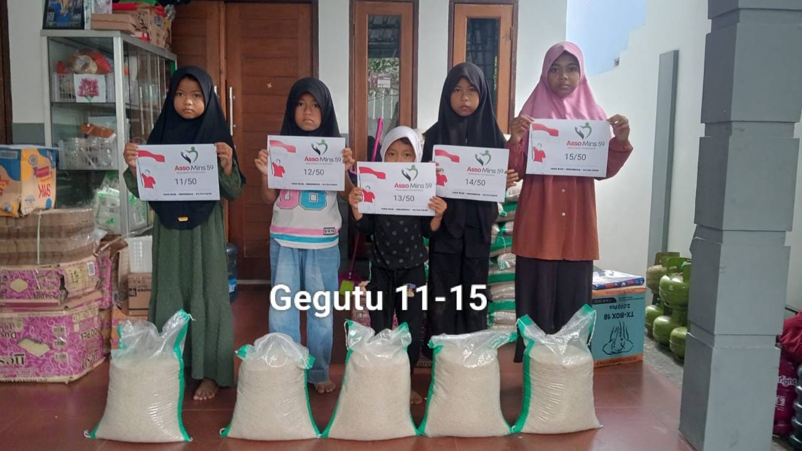
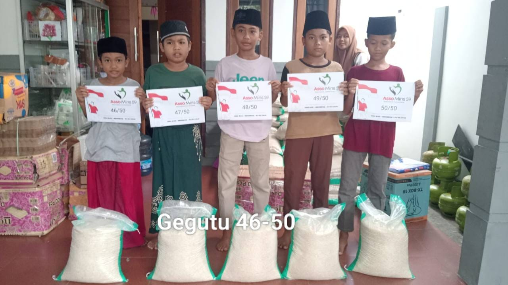
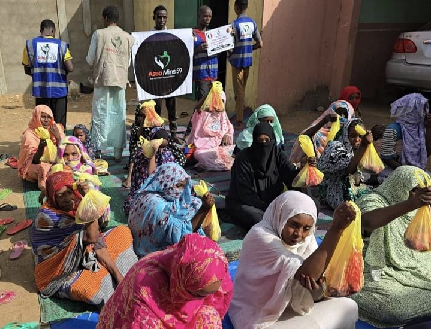
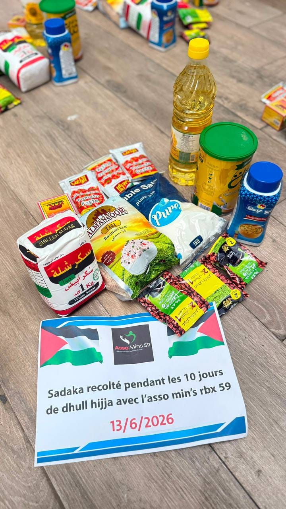
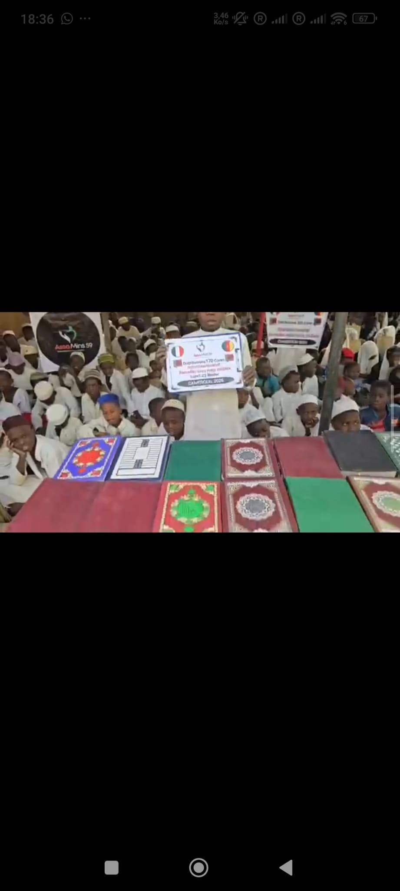
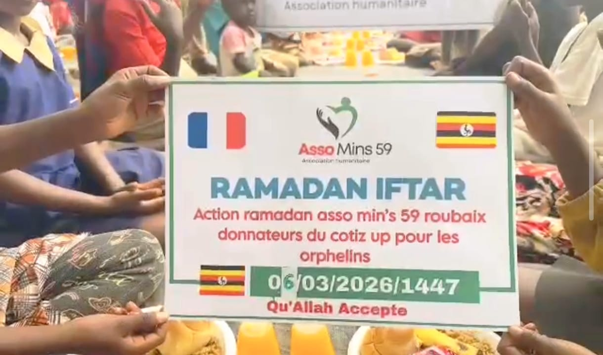
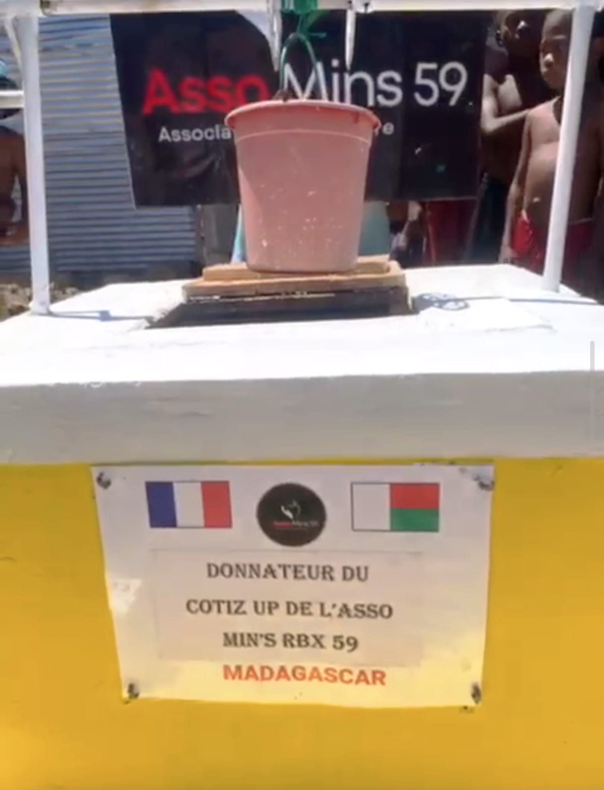
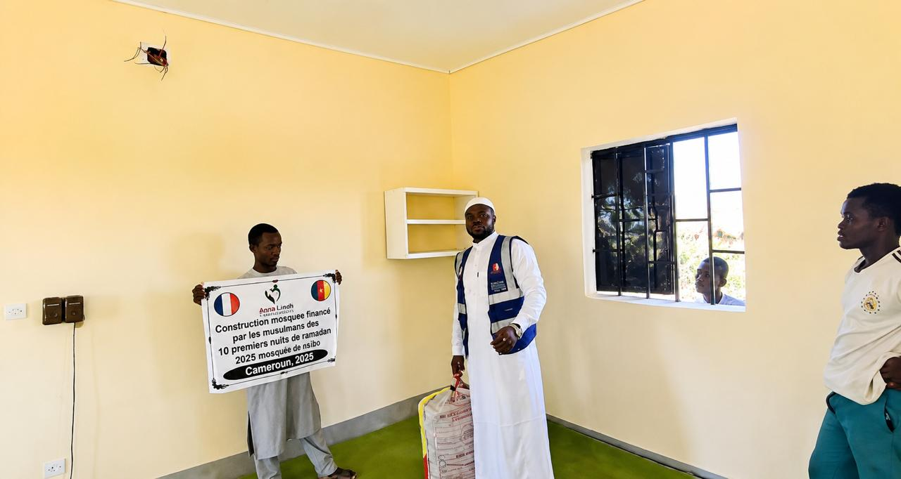
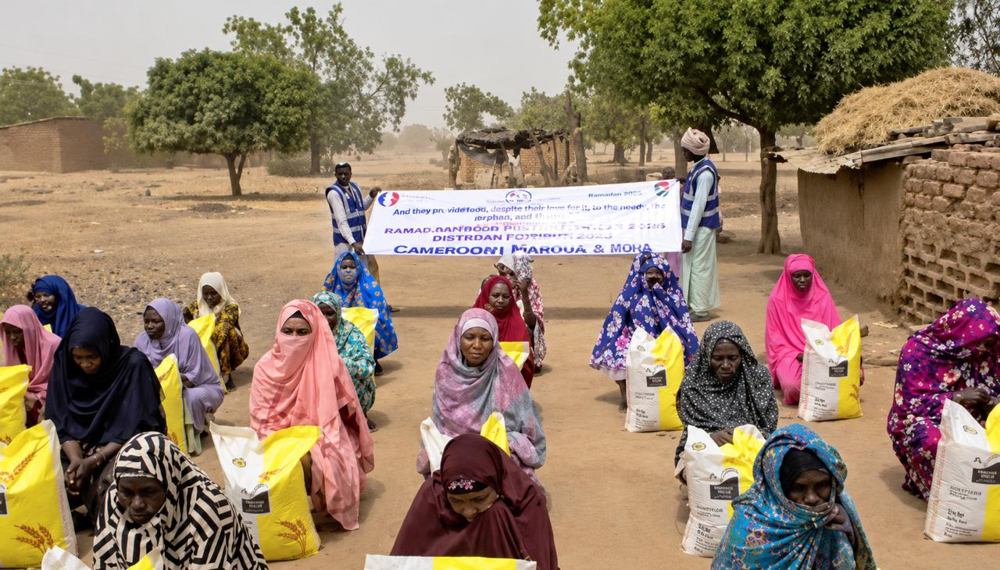
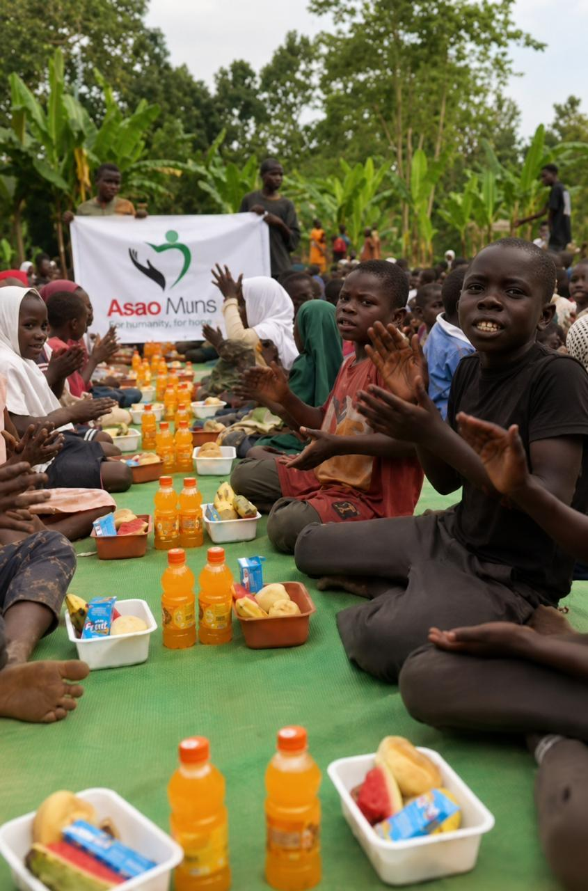
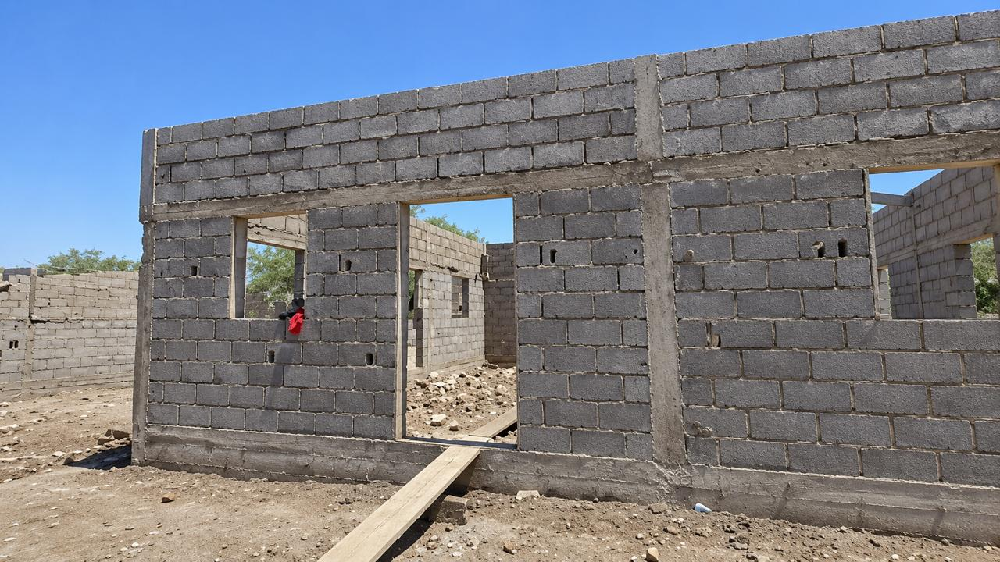
Actions à Calais
D'autres photos à venir — ajoutez-les dans le dossier images/.
En ligne, par virement bancaire ou via une cagnotte sécurisée.
Oui, nous publions régulièrement des comptes rendus et des photos des projets.
Oui, toute personne motivée est la bienvenue.
Nord de la France
Du lundi au vendredi — 9h00 à 18h00